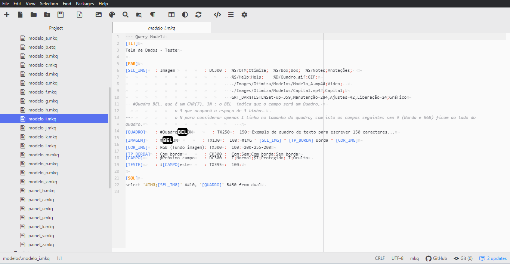
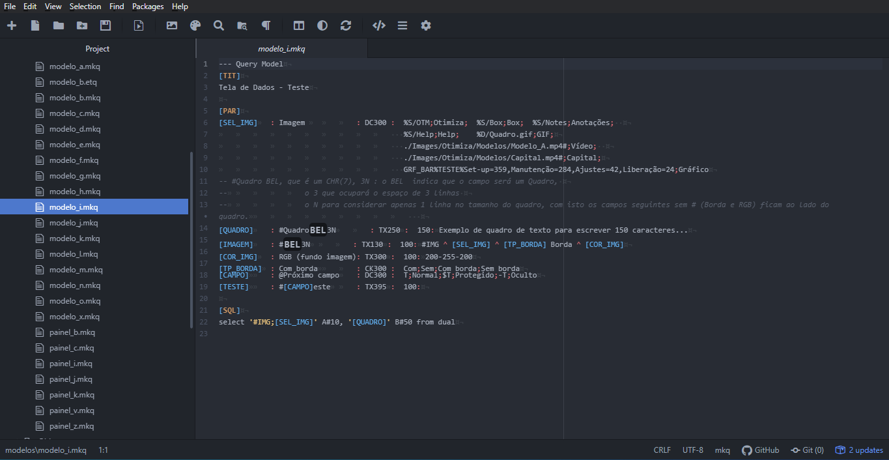
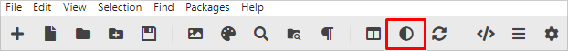

Por padrão o tema escuro é adotado por ser nativo do próprio editor, mas pode-se alterar entre os temas a qualquer momento.
O tema claro apresenta uma interface mais convencional e limpa. A predominância da cor branca com texto em preto proporciona melhor leitura. Quando dominante, a cor branca faz com que a íris se contraia para permitir menor passagem de luz, o que torna o conteúdo da tela mais nítido.

O tema escuro pode ser um grande aliado para aqueles que passam horas em frente a uma tela com cores claras e brilho excessivo . Os tons escuros ajudam a deixar a visualização mais confortável e menos cansativa.

Para escolher entre os temas claro e escuro clique no ícone destacado na imagem abaixo na barra de tarefas do Atom.
